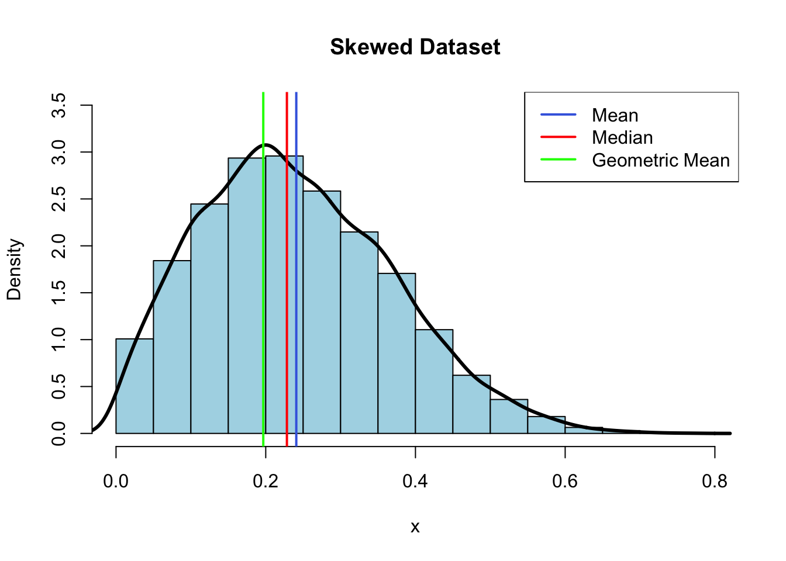

2 Descriptive Statistics
2.1 Introduction
2.2 Measures of Location using Base R
head(ChickWeight) weight Time Chick Diet
1 42 0 1 1
2 51 2 1 1
3 59 4 1 1
4 64 6 1 1
5 76 8 1 1
6 93 10 1 12.2.1 The Arithmetic Mean
The arithmetic mean is the sum of all the observations divided by the number of observations. It is written in statistical terms as
\[\overline{x} = \frac{1}{n}\sum^n_{i=1}x_i\]
y= rbeta(10000,1,12,6)
hist(y, # histogram
col = "lightblue", # column color
border = "black",
prob = TRUE, # show densities instead of frequencies
xlab = "x",
ylim = c(0,3.5),
main = "Skewed Dataset"
)
lines(density(y), col='black', lwd=3)
abline(v = mean(y),
col = "royalblue",
lwd = 2)
abline(v = median(y),
col = "red",
lwd = 2)
abline(v = exp(mean(log(y))),
col = "green",
lwd = 2)
legend(x = "topright", # location of legend within plot area
c("Mean", "Median", "Geometric Mean"),
col = c( "royalblue", "red", "green"),
lwd = c(2, 2, 2))
mean(ChickWeight$weight)[1] 121.82.2.2 The Median
median(ChickWeight$weight)[1] 1032.2.3 The Mode
The mode is the most frequently occurring value among all observations in the sample. Although it is infrequently used, it is very useful for categorical and discrete data.
Since there isn’t a built in R-function for mode, we learn how to write a function to return the mode through a few examples.
2.2.3.1 Functions
2.2.3.1.1 Base R Example
The most simple function begins by assigning the output of function() to some character string (e.g. simple_fun)
All statements after the function() are referred as the body of the function.
function_name <- function(arg1, arg2,...) {
#statements
return("some output")
}
function_name() # returns NULL[1] "some output"Use return() to output the result of the function.
return_value <- function(x,y) {
z=x-y
z=x+y
return(z)
}
return_value(4,5) [1] 9Since our goal is to find the most frequently occurring value in our data-set (ChickWeight), we need to decide the sequence of functions that we need to accomplish this. As you continue to add various R functions to your R tool belt, you will find many possible combinations for the same solution.
First, let’s assign the weight column from ChickWeight to x to simplify things. When x is called, the weight column from ChickWeight is returned as a vector.
x<-ChickWeight$weight
head(x)[1] 42 51 59 64 76 93We can return the size of x using the length function. 578
length(x)[1] 578We can reduce x to return only the unique values by using the unique function. We’ll assign it to y so we can use it later.
y <- unique(x)
length(y)[1] 212To more easily watch how the functions are working, we will create two data-frames to watch how we are manipulating both x and y.
df.x <- data.frame(x)
df.y <- data.frame(y)Using the unique values from the x vector we defined as y, we can use the match function to return a vector that replaces each value in x with their position in the y vector (1-212).
df.x$position_in_y<-match(x, y)
head(df.x, n = 30) x position_in_y
1 42 1
2 51 2
3 59 3
4 64 4
5 76 5
6 93 6
7 106 7
8 125 8
9 149 9
10 171 10
11 199 11
12 205 12
13 40 13
14 49 14
15 58 15
16 72 16
17 84 17
18 103 18
19 122 19
20 138 20
21 162 21
22 187 22
23 209 23
24 215 24
25 43 25
26 39 26
27 55 27
28 67 28
29 84 17
30 99 29The output from match can then be simplified using the tabulate function
df.y$frequency <- tabulate(df.x$position_in_y)
head(df.y) y frequency
1 42 15
2 51 8
3 59 5
4 64 5
5 76 3
6 93 4which.max returns the position of the maximum value.
which.max(df.y$frequency)[1] 43df.y[43,] #df.y[row,column] y frequency
43 41 20Putting it all together, we can do this in one line.
df.y[which.max(tabulate(match(x,y))),] y frequency
43 41 20y[which.max(tabulate(match(x,y)))][1] 41Writing this as a function
mode <- function(x){
unique_x <- unique(x)
result<-unique_x[which.max(tabulate(match(x,unique_x)))]
return(result)
}
mode(x)[1] 412.2.3.1.2 Tidyverse Example
As with most problems in R, we can also find a solution using packages from the Tidyverse. We will therefore use this as an opportunity to introduce some of the basic tenants of Tidyverse functions.
In the dplyr package, a typical workflow will combine observations into a single data-frame, aggregate them into groups, manipulate values into new columns, and summaries the data-frame into more simple terms.
The piping operator %>% allows for this to be done seamlessly by literally pipping the result of one function into arguments of another function.
print("non-piped text")[1] "non-piped text"library(dplyr)
"piped text" %>% print()[1] "piped text"To show how this works, we will start with a simple example where we first want to divided the sum of three and some other number (e.g. 2) by seven.
Because of the order of operations, the sum of two and three would need to be placed with parenthesis to indicate it happens before dividing by seven.
(4+3)/7 # correct[1] 14 + 3 / 7 # incorrect[1] 4.429The piping operator allows the order of operations be explicated dictated with manipulations of starting value reading from the left to right.
# pipes use the (.) as a placeholder
4 %>% + 3 %>% {./7} # removing the { } returns an error[1] 1Using pipes increases readability of your R-code and it can easily be reused for different starting values. In R Studio, the pipe character can be easily inserted using a keyboard shortcut (Windows:Ctrl+Shift+M, Mac:Cmd+Shift+M).
11 %>% + 3 %>% {./7}[1] 2Plus, the piped workflow can easily be defined by a function by assigning it to some string with a . in the beginning.
op_order <- . %>% +3 %>% {./7}
op_order(4)[1] 1op_order(11)[1] 22.2.3.1.2.1 Determining Mode with dplyr
Using the ChickWeight data-set as before, we start by outlining the order of operations.
- Group the data by weights
group_by() - Tally the number of members within each group and sort by frequency.
tally() - Select the row with the largest n.
slice() - Return the corresponding weight.
.$weight
ChickWeight %>% group_by(weight) %>% tally(sort = TRUE) %>% slice(1) %>% .$weight[1] 41As before, this workflow can be written as a function by placing . between the assignment operator <- and piping operator %>%.
mode_cw<-. %>% group_by(weight) %>% tally(sort = TRUE) %>% slice(1) %>% .$weight
mode_cw(ChickWeight)[1] 41However, this function will only work on the ChickWeight data-set.
mode_cw(mtcars)Error in grouped_df_impl(data, unname(vars), drop): Column `weight` is unknown